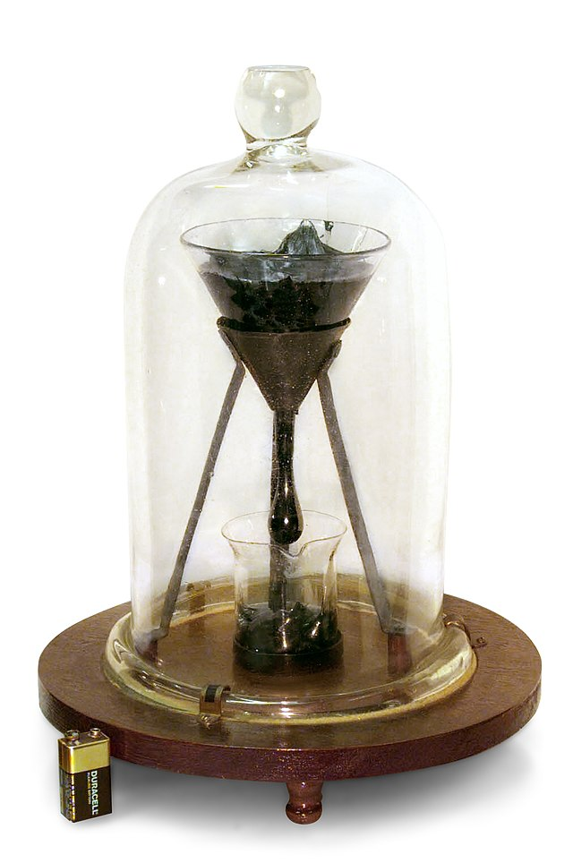

Исследование текучести пека
Этот многолетний эксперимент называется: «Опыт с капающим пеком». В 1927 году профессор одного из университетов в Австралии решил продемонстрировать, что пек, он же битум, течет, медленно, но течет как жидкость, хотя он выглядит и визуально «ведет» себя как твёрдое вещество. Пек на самом деле течет, просто поистине очень и очень медленно. Для опыта взяли большую воронку, наполненную чёрным пеком, который медленно капает в стакан. Первая капля упала через восемь лет после начала эксперимента. А за 90 лет упало еще всего восемь капель. Основываясь на этих данных, ученые выяснили, что вязкость пека в 30 миллиардов раз выше, чем у воды. Это значит, что он течет в 30 миллиардов раз медленнее, чем вода.
В 1980-ых годах учёные, получив результаты, собирались закончить эксперимент, но их остановило два фактора. Во-первых, они поняли, что никто на самом деле не видел, как именно падают капли пека. Они просто обнаруживали капли в стакане уже после их падения. А во-вторых, пек стал странно себя вести. Раньше капли падали примерно с одинаковой периодичностью, но восьмая капля упала после более долгого перерыва. Она образовалась в 2000 году, но произошел сбой электроэнергии и камеры не записали ее падение. Девятая капля упала в 2014 году, и на этот раз ее падение удалось записать. Однако, кажется, что пек стал течь медленнее и ученые не знают почему так происходит. Поэтому наблюдение продолжается и есть надежда, что оно объяснит многие аспекты связанные, в том числе, и с другими очень вязкими материалами, например, пластиком и силиконом.
Исследование живучести сорняков
В саду сложнее всего справиться с сорняками. Иногда кажется, что выиграть битву с ними невозможно, а все потому, что многие сорняки могут подолгу находиться в спячке прямо у поверхности грунта. Вот Вы самодовольно думаете, что избавились от них, как вдруг они снова повсюду. Проводилось множество исследований, олололололололололо в которых ученые пытались понять, как долго сорняки могут прятаться в почве. Самый длительный подобный эксперимент зарыт на территории университета штата Мичиган. Он представляет собой пять (оставшихся) бутылок из-под виски, наполненных песком и закопанных в секретных местах. Это ботаническое наследие Уильяма Джеймса Билла.